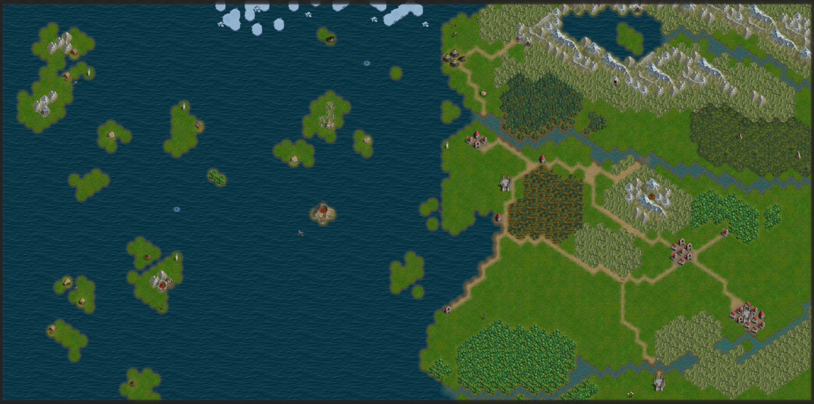
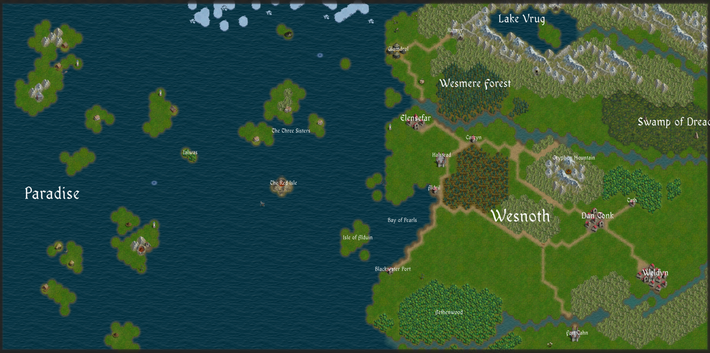

I'm working on a Battle for Wesnoth campaign, The Paradise Trap, set in the western sea off the coast of the Great Continent in the world of Wesnoth. The world of Wesnoth has a canonical map, but working with a nice-looking map is beyond the scope of my project for now. Fortunately for me, Wesnoth's game map editor creates nice enough maps and has an automatable screenshot export function built in.
I built an approximation of the world map in the in-game map editor. This maps out the terrain of both the canonical continent and my own world building—Paradise. The scale is certainly off, but it doesn't matter; I'm not concerned about accuracy for this map which will only be used at the start of scenarios to roughly plot out the movement of the characters.
Finally, I use ImageMagick to add labels to the map. The labels are drawn using a built-in Wesnoth font, so the style at least somewhat matches the game. This final image is then used at the beginning of each scenario, and can be used for spatial reference as I write the story.
This is all automated through a script that exports the wesnoth map of the world to an image and then uses a long convert invocation to add all the labels. The script is included below for reference.
#!/bin/bash
if ! [[ ./images/worldmap.png -ot ./worldmap/worldmap.cfg ]] && ! [[ ./images/worldmap.png -ot ./worldmap/build.sh ]] ; then
echo "Worldmap is up to date!"
if [[ -n "$wx" ]]; then
return 0
else
exit 0
fi
fi
wesnoth --screenshot ./worldmap/worldmap.cfg ./images/worldmap.png > /dev/null
commandline=""
font="$(wesnoth --data-path)/fonts/OldaniaADFStd-Regular.otf"
label() {
x=$1
y=$2
text="$3"
scale=${4:-1}
scalei="$(echo "$scale * 48" | bc | cut -d. -f1)"
len="$(echo "$text" | wc -c)"
commandline="$commandline -pointsize \"$scalei\" -font \"$font\" -fill white -gravity NorthWest -draw \"text $((x - (scalei * len) / 6)),$((y - $scalei)) \\\"$text\\\"\""
}
label 3510 1040 "Elensefar" 1.5
label 3732 1338 "Halstead"
label 3680 1616 "Aldril"
label 4000 1190 "Carcyn"
label 3303 2304 "Blackwater Port"
label 3024 2037 "Isle of Alduin"
label 2445 1134 "The Three Sisters"
label 2390 1575 "The Red Isle"
label 1606 1317 "Ialwas"
label 3357 441 "Glamdrol"
label 3837 282 "Rumyr"
label 5031 1866 "Dan Tonk" 1.5
label 5523 2349 "Weldyn" 1.5
label 5349 1722 "Tath"
label 4875 2844 "Fort Tahn"
label 4815 1362 "Gryphon Mountain"
label 5640 1086 "Swamp of Dread" 2
label 4380 213 "Lake Vrug" 2
label 3395 1890 "Bay of Pearls"
label 3960 760 "Wesmere Forest" 2
label 3774 2670 "Aethenwood"
label 423 1719 "Paradise" 3
label 4344 1911 "Wesnoth" 3
eval "convert $commandline ./images/worldmap.png ./images/worldmap.png"